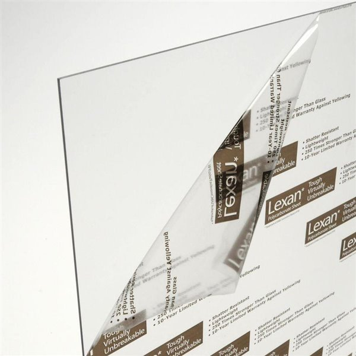

General Design

As mentioned in my previous post, I will be designing an Alpha type Stirling engine. For more details about how this particular engine type works, check out that post. I’ve been doing some thinking about what this engine will actually look like in reality, and I’ve drawn some inspiration from designs I’ve found online. I’ll showcase those as well in this post, but I think my design is still fairly unique, given that I’ve had to consider my specific resource and manufacturing constraints.
My Stirling engine will simply be using air as its working fluid. This is actually pretty common in many Stirling engines — the main draw being that air is free, replenishable, safe, and easy to handle. In terms of manufacturing and assembly of the engine and its parts, I plan on using basic tools, such as drills and screwdrivers, in addition to a portable circular saw. I also have a mini hobbyist CNC router that I sometimes use to make small parts for robotics competitions — this will be extremely useful, as being able to manufacture custom parts with precision makes this project a whole lot more feasible (a CNC router can cut out flat parts by moving a drill bit around and above a 2D plane — CNC tools in general are controlled by a computer for a high degree of accuracy/precision).

My tool constraints will also dictate my material constraints. As mentioned, I can only work accurately on 2D parts, and my router is not powerful enough to cut metals (actually, it might just barely be able to do aluminum, but I’d have to learn how to work with it, and I don’t want to risk it). I’ve decided to make my custom parts out of Lexan (polycarbonate) — a plastic that is a close relative to Plexiglass. Lexan is a very strong and flexible plastic, so it won’t shatter under stress like Plexiglass. Also, importantly, my router can cut Lexan, and I’ve worked with it before, so hopefully things will go smoothly. I will have to design my engine to only make use of custom parts that are flat, but this should be doable — I already have some ideas.
As for my other parts, I will purchase them from McMaster-Carr, an online industrial hardware supplier that I’ve had good experiences dealing with in the past through our school’s robotics team. I’ve already found some pipe that I can use as my piston chamber walls, and some piston seals I can use to create a fully sealed system — this is necessary to make sure the working fluid stays in the engine. Once I have my parts selected, I’ll talk about them in a future post.
My overall engine design will actually look fairly similar to the theoretical Alpha engine layout below:

To get a better, more practical idea of how I could construct an engine, I did a bit of research — these two are probably the most relevant examples of homemade Alpha type Stirling engines I could find:
I don’t have access to the more advanced manufacturing techniques used in both of those videos, such as welding, so my design will look quite different. I plan on switching things up a bit and mounting my flywheel parallel to the ground, with both pistons facing sideways (so piston rod direction of motion = parallel to the ground). This will make it easier to support my cylinders and flywheel. I’ll delve deeper into design specifics in later posts. The next step for me in this project is to make some simplified mathematical models of the forces/pressure/energy in the engine so that I can make more informed, specific design choices.
My Stirling engine will simply be using air as its working fluid. This is actually pretty common in many Stirling engines — the main draw being that air is free, replenishable, safe, and easy to handle. In terms of manufacturing and assembly of the engine and its parts, I plan on using basic tools, such as drills and screwdrivers, in addition to a portable circular saw. I also have a mini hobbyist CNC router that I sometimes use to make small parts for robotics competitions — this will be extremely useful, as being able to manufacture custom parts with precision makes this project a whole lot more feasible (a CNC router can cut out flat parts by moving a drill bit around and above a 2D plane — CNC tools in general are controlled by a computer for a high degree of accuracy/precision).
My tool constraints will also dictate my material constraints. As mentioned, I can only work accurately on 2D parts, and my router is not powerful enough to cut metals (actually, it might just barely be able to do aluminum, but I’d have to learn how to work with it, and I don’t want to risk it). I’ve decided to make my custom parts out of Lexan (polycarbonate) — a plastic that is a close relative to Plexiglass. Lexan is a very strong and flexible plastic, so it won’t shatter under stress like Plexiglass. Also, importantly, my router can cut Lexan, and I’ve worked with it before, so hopefully things will go smoothly. I will have to design my engine to only make use of custom parts that are flat, but this should be doable — I already have some ideas.

As for my other parts, I will purchase them from McMaster-Carr, an online industrial hardware supplier that I’ve had good experiences dealing with in the past through our school’s robotics team. I’ve already found some pipe that I can use as my piston chamber walls, and some piston seals I can use to create a fully sealed system — this is necessary to make sure the working fluid stays in the engine. Once I have my parts selected, I’ll talk about them in a future post.
My overall engine design will actually look fairly similar to the theoretical Alpha engine layout below:
To get a better, more practical idea of how I could construct an engine, I did a bit of research — these two are probably the most relevant examples of homemade Alpha type Stirling engines I could find:
I don’t have access to the more advanced manufacturing techniques used in both of those videos, such as welding, so my design will look quite different. I plan on switching things up a bit and mounting my flywheel parallel to the ground, with both pistons facing sideways (so piston rod direction of motion = parallel to the ground). This will make it easier to support my cylinders and flywheel. I’ll delve deeper into design specifics in later posts. The next step for me in this project is to make some simplified mathematical models of the forces/pressure/energy in the engine so that I can make more informed, specific design choices.